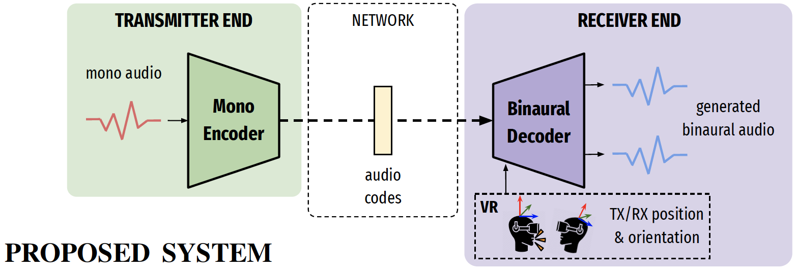

In this work, we aim to realize a binaural communication system, which is capable of (a) encoding transmitter audio into a low-bitrate neural code, and (b) synthesizing binaural audio from these codes including environmental factors such as room reverb and noise floor.

Audio samples
Please use headphones to listen to the following audio samples.
Sample 1: Pay attention to how the "baseline" and the "decoder-only" lack the environmental sounds, which are present in "ground truth" and "proposed".Input mono speechBaselineDecoder onlyProposedGround truthSample 2: Pay attention to the tiny sounds of stepping shoes and rubbing clothes, which the "baseline" and the "decoder-only" lack, while present in "ground truth" and "proposed".Input mono speechBaselineDecoder onlyProposedGround truthSample 3: Although we focused on speech, we also tested with singing input. The "proposed" suffers from data mismatch and the quality was greatly degraded. However, it still captured the environmental sounds like room reverb and noise.Input mono speechBaselineDecoder onlyProposedGround truth